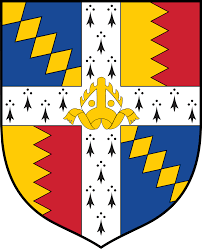
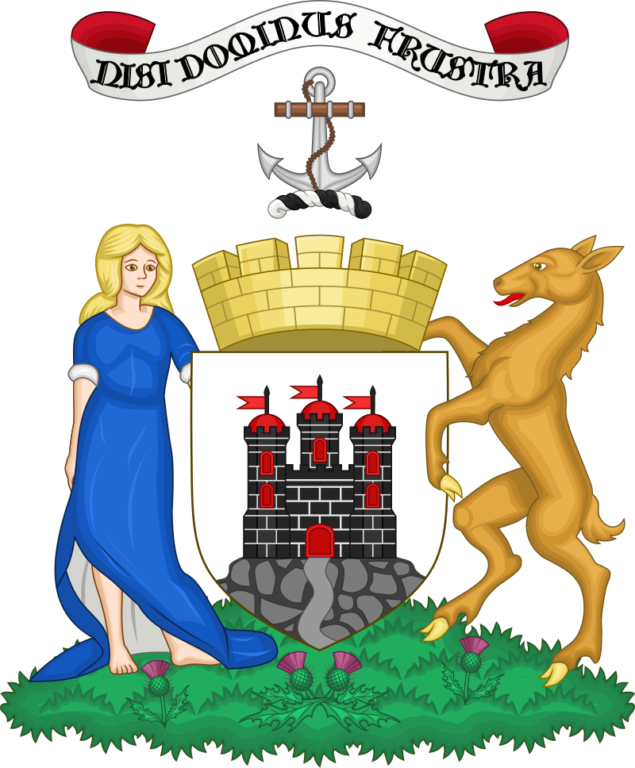

| City Name | Population | City Logo | Sport Teams |
| London | 8.982 million |  |
- Queens Park Rangers Football Club (Queens Park Rangers FC) - English Football League Championship (Football/Soccer)
- London Wasps Rugby Football Club (London Wasps RFC) - Gallagher Premiership Rugby (Rugby Union)
- Harlequins Football Club (Harlequins FC) - Gallagher Premiership Rugby (Rugby Union)
- London Lions - British Basketball League (Basketball)
|
| Birmingham |
1.1 million |
 |
- Aston Villa FC (Football - Premier League)
- Birmingham City FC (Football - Championship)
- Warwickshire County Cricket Club (Cricket - County Championship)
- Birmingham Bears (Cricket - T20 Blast)
|
| Manchester |
547,627 |
 |
- Manchester United FC (Football - Premier League)
- Manchester City FC (Football - Premier League)
- Lancashire County Cricket Club (Cricket - County Championship)
- Manchester Thunder (Netball - Netball Superleague)
|
| Glasgow |
629,501 |
 |
- Celtic FC (Football - Scottish Premiership)
- Rangers FC (Football - Scottish Premiership)
- Glasgow Warriors (Rugby - United Rugby Championship)
- Glasgow Rocks (Basketball - British Basketball League)
|
| Liverpool |
498,042 |
|
- Liverpool FC (Football - Premier League)
- Everton FC (Football - Premier League)
- Lancashire County Cricket Club (Cricket - County Championship)
- Liverpool Mavericks (Rugby League - Championship)
|
| Leeds |
789,194 |
|
- Leeds United FC (Football - Premier League)
- Yorkshire County Cricket Club (Cricket - County Championship)
- Leeds Rhinos (Rugby League - Super League)
- Leeds Tykes (Rugby Union - Premiership Rugby)
|
| Sheffield |
584,853 |
|
- Sheffield United FC (Football - Championship)
- Sheffield Wednesday FC (Football - League One)
- Yorkshire County Cricket Club (Cricket - County Championship)
- Sheffield Eagles (Rugby League - Championship)
|
| Edinburgh |
482,005 |
 |
- Heart of Midlothian FC (Football - Scottish Championship)
- Hibernian FC (Football - Scottish Premiership)
- Edinburgh Rugby (Rugby - United Rugby Championship)
- Edinburgh Wolves (American Football - BAFA National Leagues)
|
| Bristol |
463,405 |
|
- Bristol City FC (Football - Championship)
- Bristol Bears (Rugby - Premiership Rugby)
- Gloucestershire County Cricket Club (Cricket - County Championship)
- Bristol Flyers (Basketball - British Basketball League)
|
Southampton |
269,781 |
|
Southampton
- Southampton FC (Football - Premier League)
- Hampshire County Cricket Club (Cricket - County Championship)
- Southampton Solent Devils (Ice Hockey - NIHL South Division 1)
- Solent Kestrels (Basketball - NBL Division 1)
|